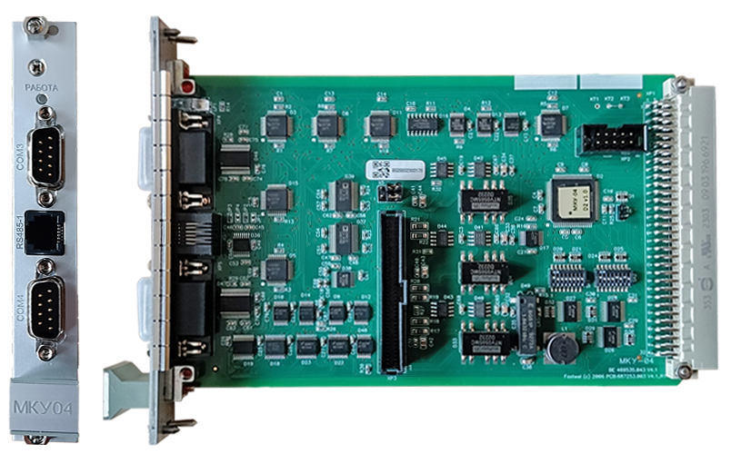

Замена МКУ

Замена неисправного МКУ производится при выключенном питании микропроцессорного блока («Основного» или «Резервного» комплекта) на котором данный модуль установлен:
Отключение питания осуществляется на модуле источника питания (МИП) «Основного» или «Резервного» блока.
Замена МКУ:
- Открутить фиксирующие МКУ винты.
- Частично извлечь модуль, чтобы можно было отсоединить разъём со шлейфом. После этого извлечь модуль полностью.
- Взять исправный модуль МКУ и установить на наборных полях микропереключатели также, как они установлены на неисправном модуле (это соотвествует номеру станции, номеру участка и признаку «Основного» или «Резервного» блока). Перемычки на новом и старом модуле должны занимать одинаковые позиции.
- Вставить новый модуль не до конца, чтобы можно было соединить разъём шлейфа с модулем. После этого вставить модуль в блок до упора.
- Зафиксировать новый модуль МКУ винтами.